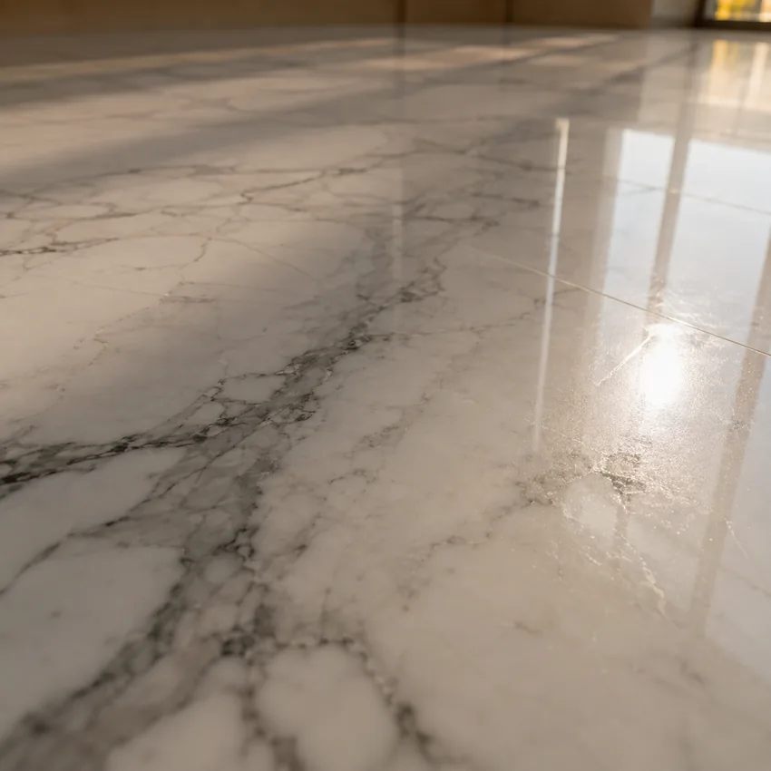

01
Marble
- Family
- Limestone
- Porosity
- Medium
- Vulnerable to
- Acids
- Finish
- Polished or honed
Marble is a limestone, so it is soft and vulnerable to acids. Lemon juice, a descaler or an ordinary household cleaner is enough to leave a dull mark that no washing will lift: the surface has been chemically etched, not soiled.
Mechanical wear adds to that. In an entrance or a corridor, microscopic sand scratches the polish and the marble dulls in patches, following the walking routes exactly.
What it needsA pH-neutral cleaner day to day, and a re-polish once the shine has gone in patches.
